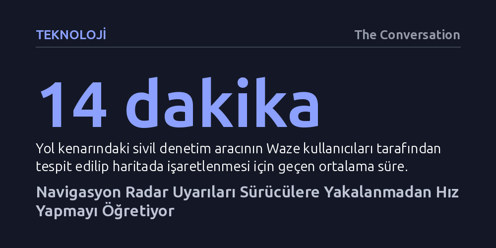

TEKNOLOJI · The Conversation · 2026-10-27
Navigasyon uygulamalarındaki radar uyarıları, sürücülerin yalnızca kamerayı gördüklerinde yavaşlayıp diğer yerlerde hız yapmasına yol açarak cezasızlık algısı yaratıyor. Saha araştırması, uyarının bulunmadığı anlarda sürücülerin hız sınırını aşma oranının iki katına çıktığını gösteriyor.
Trafik kontrollerini tahmin edilebilir kılan telefon uyarıları, ceza caydırıcılığını yok ederek sürücüleri hız yapmanın güvenli olduğuna ikna ediyor.

Trafikte karşı yönden gelen araca selektör yakarak ileride polis olduğunu haber vermek ya da kamyon şoförlerinin telsizden birbirini uyarması on yıllardır bilinen bir dayanışma biçimi. Günümüzde bu gelenek yerini çok daha organize ve kitlesel bir dijital ağa bıraktı. Aylık 150 milyondan fazla aktif kullanıcısı bulunan Waze başta olmak üzere Google Haritalar ve Apple Haritalar gibi uygulamalar, sürücülerin tek bir dokunuşla polis denetimlerini ve hız kameralarını haritada işaretlemesine imkân tanıyor.
Avustralya'da yapılan araştırmalar, sürücülerin en az üçte birinin direksiyon başındayken bu uygulamaları kullandığını gösteriyor. Navigasyon yazılımları rota ve trafik akışını kolaylaştırma vaadi sunsa da radar bildirimi özelliği ciddi bir ikilem yaratıyor. Sistem, kurallara uymayı teşvik etmekten ziyade, sürücülere sadece nerede yakalanabileceklerini söyleyen yapay bir erken uyarı kalkanına dönüşüyor.
Uygulama uyarılarının sahadaki gerçek karşılığını görmek isteyen araştırmacılar, güneydoğu Queensland genelinde 33 yol kenarına sivil bir araç park etti. Polislerin kullandığı el tipi lazer cihazlarıyla geçen araçların hızları kaydedildi. Dışarıdan bakıldığında sıradan duran bu araç, ortalama 14 dakika içinde yoldan geçen Waze kullanıcıları tarafından fark edilip sisteme polis kontrolü olarak işlendi.
Bildirimin haritaya düşmesiyle birlikte trafik akışındaki tablo dramatik biçimde değişti. İncelenen 9 binden fazla araç arasında, uyarı öncesinde hız sınırını aşan sürücülerin oranı yüzde 55 iken bildirimden sonra yüzde 26'ya geriledi. En belirgin düşüş ise 100 km/s hız sınırının geçerli olduğu yollarda yaşandı; sürat yapanların oranı yüzde 64'ten yüzde 12'ye indi. Hız sınırının 40 km/s olduğu okul bölgelerinde dahi uyarı öncesinde araçların yaklaşık üçte ikisi sınırı aşarken, uyarının ardından bu oran üçte bire geriledi.
Sürücülerin bildirimi görünce yavaşlaması ilk bakışta olumlu bir sonuç gibi görünse de araştırmanın asıl kaygı verici bulgusu telefonun sessiz kaldığı anlarda yatıyor. Trafik denetimlerinin caydırıcılığı, sürücülerin her an ve her yerde denetlenebilecekleri algısına dayanır. Kriminoloji araştırmaları, caydırıcılıkta cezanın ağırlığından ziyade yakalanma ihtimalinin kesinliğinin belirleyici olduğunu kanıtlıyor. Navigasyon uygulamaları ise bu belirsizliği ortadan kaldırarak denetimleri kolayca savuşturulabilir öngörülebilir risklere çeviriyor.
Bir sürücü uyarıyı görüp yavaşladığında ve kontrol noktasını geçtikten sonra yeniden gaza bastığında, kuralı çiğneyip yakalanmadan kurtulabileceğini öğreniyor. Kriminolojide "cezadan kaçınma" olarak tanımlanan bu durum, sürücülerde bir sonraki seferde de yakalanmayacaklarına dair sahte bir dokunulmazlık hissi oluşturuyor. Sonuçta bildirim "yavaşla", bildirimin olmaması ise "hız yapabilirsin" anlamına gelen tehlikeli bir alışkanlığa dönüşüyor. Nitekim bölgedeki sürücülerin dörtte üçünden fazlası hız yaptığını, neredeyse yarısı ise yakalanmayı hiç beklemediğini ifade ediyor.
Hız sınırını birkaç kilometre aşmak zararsız görünebilir; ancak küçük hız artışları bile kaza olasılığını ve çarpışma şiddetini doğrudan artırıyor. Queensland'deki ölümlü kazaların yaklaşık üçte birinde aşırı hız temel etken olarak kaydediliyor. Navigasyon uygulamaları polis kontrollerini önceden bildirebilse de iki aracın arasından aniden yola fırlayan bir çocuğu veya okul servisinin arkasından çıkan bir yayayı haber veremez. Ekranda polis uyarısı olmaması yolun hız yapmaya elverişli olduğu anlamına gelmiyor.
Araştırmacılar, radar dedektörlerinde olduğu gibi bu uygulamaların veya uyarı özelliklerinin yasaklanmasını çözüm olarak görmüyor. Bunun yerine kolluk kuvvetlerinin dijital çağın dinamiklerine göre taktik yenilemesi gerektiğini vurguluyor. Bildirimler haritaya hızla işlenip orada kaldığı için, ekipler işaretlendiklerini anladıkları anda yer değiştirerek denetimi henüz uyarılmamış yeni noktalara taşıyabilir. Böylece tek bir ekip gün içinde birden fazla yerde görünerek denetim riskini geniş bir alana yayabilir ve sürücülere ekrana değil yol koşullarına göre araç kullanmaları gerektiğini hatırlatabilir.